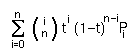

Bézier1 Splines
 Technically
PostScript uses cubic Bézier splines. Each control point determines
the slope of the spline at the corresponding end point. TrueType uses quadratic
Bézier splines, in these there is only one control point between two
end points and that point determines the slope of the spline at both end
points. Both formats also use lines (which are linear Bézier splines).
Technically
PostScript uses cubic Bézier splines. Each control point determines
the slope of the spline at the corresponding end point. TrueType uses quadratic
Bézier splines, in these there is only one control point between two
end points and that point determines the slope of the spline at both end
points. Both formats also use lines (which are linear Bézier splines).
 It is also
possible to have other degree Bézier splines. For a quartic spline
there would be 3 control points, for a quintic 4 control points, etc. Of
these only the linear, quadratic and cubic splines are interesting to us--
those used by TrueType and PostScript.
It is also
possible to have other degree Bézier splines. For a quartic spline
there would be 3 control points, for a quintic 4 control points, etc. Of
these only the linear, quadratic and cubic splines are interesting to us--
those used by TrueType and PostScript.
The examples at left are cubic splines with two control points, each determining the slope at the nearest end point, while the example at right shows a quadratic spline with one control point used to determine the slopes at both end points.
In general if there are n+1 points labeled P0, P1, ... Pn, with P0 and Pn the end points (and all the others control points) then the equation of the Bézier spline between them is: . If there are two points then this is just the line between the two end points, if three then the quadratic spline used by TrueType, if four then the cubic spline used by PostScript.
A cubic Bézier curve may be viewed as:
x = ax*t3 + bx*t2 + cx*t +dx
y = ay*t3 + by*t2 + cy*t +dy
Where
| dx = P0.x | dy = P0.y | |
| cx = 3*P1.x-3*P0.x | cy = 3*P1.y-3*P0.y | |
| bx = 3*P2.x-6*P1.x+3*P0.x | by = 3*P2.y-6*P1.y+3*P0.y | |
| ax = P3.x-3*P2.x+3*P1.x-P0.x | ay = P3.y-3*P2.y+3*P1.y-P0.y |
And a quadratic Bézier curve:
x = bx*t2 + cx*t +dx
y = by*t2 + cy*t +dy
with
| dx = P0.x | dy = P0.y | |
| cx = 2*P1.x-2*P0.x | cy = 2*P1.y-2*P0.y | |
| bx = P2.x-2*P1.x+P0.x | by = P2.y-2*P1.y+P0.y |
And a line:
| dx = P0.x | dy = P0.y | |
| cx = P1.x-P0.x | cy = P1.y-P0.y |
Converting TrueType to PostScript
Lines convert with no math whatsoever.
Any quadratic spline can be expressed as a cubic (where the cubic term is zero). The end points of the cubic will be the same as the quadratic's.
CP0 = QP0
CP3 = QP2
The two control points for the cubic are:
CP1 = QP0 + 2/3 *(QP1-QP0)
CP2 = CP1 + 1/3 *(QP2-QP0)
So converting from TrueType to PostScript is trivial. There is a slight error introduced due to rounding, but it is unlikely to be noticeable.
(Anish Mehta points out that in truetype it is possible to specify points which are in the middle of a pixel (ie. with an x or y value ending in 1/2). These will also introduce rounding errors when converted to postscript, but here the solution is simple: Scale the em-square of the font by a factor of 2 and the problem vanishes).
Converting PostScript to TrueType
Most cubic splines cannot be represented exactly by a quadratic (or even by a series of quadratics). The best that can be done is to approximate the cubic to within some margin of error. Here is a way to do that:
Given a cubic spline. Look at two points on the spline. Then there is only one possible quadratic spline between those two points which has the desired slope at those two points. (the one quadratic has its end points as the end points of the interval, and its control point is determined by the intersections of the lines tangent to the cubic at the start and end of the interval).
 I cannot
prove this, but have determined empirically (after being told it worked)
that if a cubic spline -- like the quarter ellipse at right -- is divided
"evenly" into n quadratic splines (here n==3) then the control points will
have the nice property that the on-curve points are exactly mid-way between
control points -- this means that truetype can represent them as interpolated
points. An even division means means that each sub-point is placed where
t=i/n (where 0<i<n).
I cannot
prove this, but have determined empirically (after being told it worked)
that if a cubic spline -- like the quarter ellipse at right -- is divided
"evenly" into n quadratic splines (here n==3) then the control points will
have the nice property that the on-curve points are exactly mid-way between
control points -- this means that truetype can represent them as interpolated
points. An even division means means that each sub-point is placed where
t=i/n (where 0<i<n).
FontForge first checks to see if the curve is already a quadratic -- this might happen if the cubic originally came from a truetype font. If it is it simply converts the control point.
Otherwise FontForge start inserting points. It begins by inserting a single point mid-way on the spline. If this produces a good approximation it stops, otherwise it tries again with two, three ... additional points.
On each test it will round the control points to integer values because truetype output requires this (note that it does not do this to the on-curve points, they are interpolated between control points and will be ok if the control points are). Then it checks to see if the resultant quadratics are close to the original curve.
FontForge may also break the curve at its points of inflection (because no quadratic can have one there should be a point there to start a new quadratic) and apply the above algorithm to the components.
If FontForge can find no good approximation using the above algorithm it will fall back to its old method, which is:
Start from the end of the spline and every so often (ie. within the margin of error) check to see if the one permissible quadratic approximation actually matches the cubic closely enough .
If this approximation works then keep it as part of the result, and continue the process by advancing our start point along to the cubic spline to the end of the quadratic we just created.
(There are some slight complexities introduced because there may not be a quadratic approximation at a given point (if the tangents happen to be parallel) or because the approximation happens to be linear, but these are easily dealt with).
It may, of course, happen that the "cubic" we are given is actually a quadratic (if its third degree term is 0), the most likely cause is that the font came from a truetype source. In that case the control point for the quadratic is at:
QP1 = CP0 + 3/2 * (CP1 - CP0)
Other sources I have read on the net suggest checking the cubic spline for points of inflection (which quadratic splines cannot have) and forcing breaks there. To my eye this actually makes the result worse, it uses more points and the approximation does not look as close as it does when ignoring the points of inflection. So I ignore them.
Open Type, another solution
Adobe and Microsoft decided to produce one font format which could hold either a true type font or a postscript font. This is called Open Type. It is essentially a superset of TrueType. Any TrueType font is a valid Open Type font, but Open Type fonts can also contain postscript. Anything that supports Open Type will not require converting between PostScript and True Type.
See Also
1 Bézier splines were developed by Pierre Bézier (1910-1999).